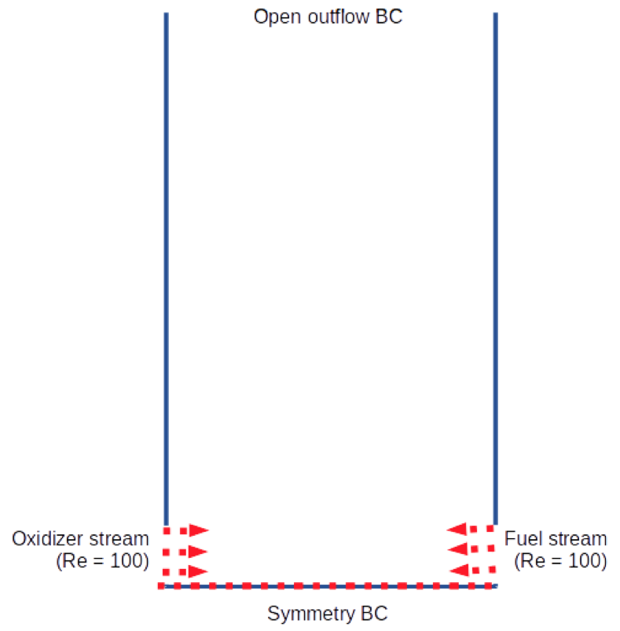

Setup¶
Computational domain¶
In this project, a simple square domain is employed to construct a counter flow stretched diffusion flame with two separate fuel and oxidizer streams as shown below. The fuel stream comes into the reactor on the right side and oxidizer stream is made on the opposite direction. Two streams are set with the same velocity and different temperature. In this configuration, the flow must be characterized perfectly with symmetrical shape across the centerline axis. An half of computational domain is redundant to run, accordingly it may delay the computational time to achieve steady solution. Thus, another half of domain is considered to run and symmetric boundary condition is employed along the centerline axis of two streams.
Grid resolution is set to 150x300 in x and y direction, respectively.
{kind=link}
Boundary conditions¶
Two inlet streams size is as 10% as the height of the domain. And the height of the domain is set to be twice of the width such that the flow formation moving out of the domain is ensured to be align with the vertical direction. Note that when two streams mix together and form a stretched flow field (called counter-flow) and leads to another vortices on both side of the walls. Then it may create back-flow if the length of the side wall is not sufficiently long. This type of back-flow does not ensure the outflow boundary condition on the upper boundary and may cause the numerical inaccuracy due to lack of flow information of outer field.
Inlet BC
To accomodate the pre-specified inlet stream during the simulation, velocity fixed boundary condition is applied to the inlet boundary nodes and the \(u\) and \(v\) velocity components remain constant. On the other hand, the pressure keeps changing according to the inlet pressure change. This can be achieved by applying extrapolated pressure computation from the inner point values.
Symmetric BC
To achieve the symmetric boundary condition on the bottom nodes, \(v\) velocity and the gradient of \(u\) velocity and other state vector elements normal to the boundary are set to zero.
No-Slip BC
Both side walls are set to no-slip boundary condition such that all components of velocity become zero and pressure and mixture fraction gradients are set to zero.
Pressure boundary condition for open outlet
The outer domain pressure is set identical to the inital pressure of the inner domain. If there is difference between pressure on the upper nodes and inner pressure right next to them, there will be stiff pressure driven flow happening right at the boundary, resulting in critical numerical instability. Note that the characteristic boundary needs to be implemented to cope with this problem. However in this project, this type of numerical issue is neglected to make the implemnetation simple.
Initial condition¶
- Initial pressure = 1 atm
- Outlet pressure = 1 atm (fixed during the simulation)
- Initial temperature = 900 K
- Initial mixture fraction = 0 except for the inlet fuel stream nodes.